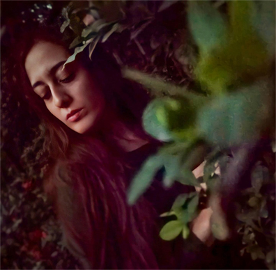

|  |
Hakkımda
13 Şubat 1995 yılında Ankara'da dünyaya geldi. Anadolu Lisesinden mezun olduktan sonra Üniversite eğitimi için Fırat Üniversitesi İletişim Fakültesi'nde Görsel İletişim Bölümü'nü tercih etmiştir. Okuma ve araştırmayı seven Duygu Su Çelik, alanı ve alan dışı çeşitli çalışmalar yapmaktadır.
|